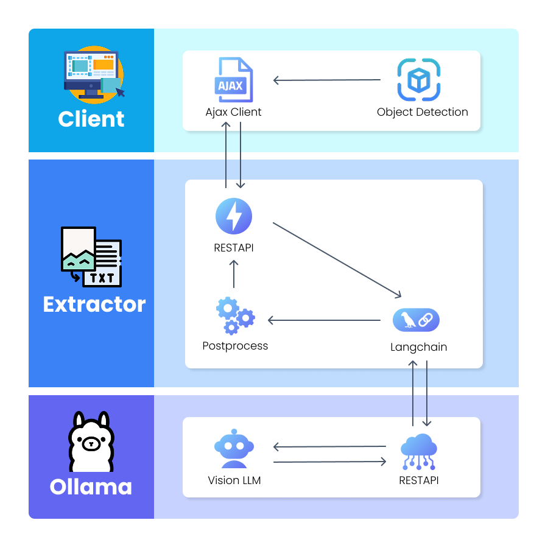

Indonesian ID Card Auto-Capture & LLM OCR Pipeline
High-accuracy document extraction system eliminating manual user photography. Deploys an on-device TFJS YOLOv5nu detector for real-time edge bounding and a GPU-accelerated Ministral-3 Vision LLM for structured OCR with hierarchical administrative region normalization.
3-Tier Decoupled Pipeline

Tier 1: Client Edge (TFJS)
Executes in-browser YOLOv5nu inference on incoming camera video frames. Triggers auto-capture only when the document is stable within bounding constraints and auto-crops the ROI.
Tier 2: Extractor API
FastAPI microservice orchestrating multi-modal prompts, parsing raw token streams, enforcing Pydantic type validation, and executing hierarchical CSV fuzzy lookups.
Tier 3: Ollama GPU Runtime
Hosts Ministral-3 (3B parameters) in an isolated container network. Ingests cropped image bytes and extracts complex Indonesian text labels with context awareness.
On-Device YOLOv5nu Performance Matrix


| Metric | YOLOv5nu (TFJS) | Contour-based Baseline | Delta Gain |
|---|---|---|---|
| Precision | 0.9996 | 0.8420 | +18.7% |
| Recall | 1.0000 | 0.7830 | +27.7% |
| mAP @0.5 | 0.9950 | 0.8110 | +22.6% |
| mAP @0.5:0.95 | 0.9938 | 0.6540 | +51.9% |
Production Challenges & Mitigations
01. Indonesian Administrative Hierarchy Normalization
OCR models frequently misread obscure Indonesian sub-district names. Implemented a hierarchical cascading fuzzy matcher: Province $\to$ City/Regency $\to$ District $\to$ Village, ensuring 100% adherence to standard official administrative registries.
02. Low-End Mobile Device Latency
Quantized the YOLOv5nu model to 160x160 resolution in TFJS, allowing mid-tier devices (e.g. Samsung Galaxy A13) to achieve continuous ~900ms frame evaluation without overheating or frame dropping.